사람이 루프에서 빠지고 있어요
발표자 Lydia Hallie는 Anthropic Claude Code 팀에서 일해요. 아침 발표 때 기술 문제가 있어서 집에서 다시 녹화한 영상이에요. 이야기는 모델이 좋아졌다는 데서 출발해요. 지금 매일 쓰는 모델은 Opus 5.5이고, 이번 주에 Fable 5.2가 나왔어요. 둘 다 오래 걸리는 작업과 코드베이스 이해에 강하고, 특히 Fable은 자기 결과를 검증하는 데 강하다고 해요.
그래프는 SWE-bench Pro 점수가 2025년 11월 Opus 4.5의 52%에서 2026년 9월 Opus 5.5의 90%까지 오른 모습이에요. 맨 오른쪽 93% 점의 모델 이름은 발표자 얼굴 화면에 가려 보이지 않아요. 제목 아래에는 'Anthropic 자체 보고, 모델마다 테스트 설정이 다르다'는 단서가 붙어 있어요.
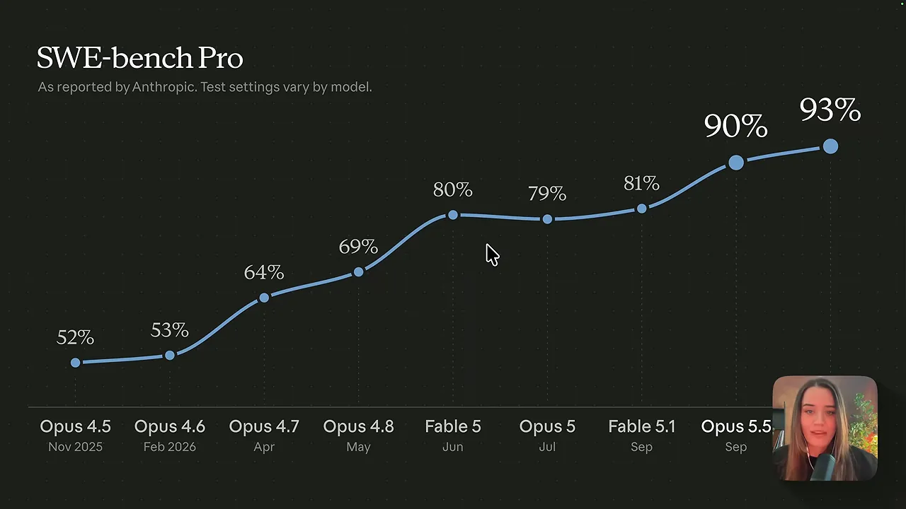
연초의 세션은 이랬어요
올해 초에는 Opus 4.5로 일했어요. 당시엔 좋은 모델이었지만 지금보다 훨씬 일찍 멈췄어요. 사람은 계속 고쳐 주고, 잊지 말라고 CLAUDE.md에 'IMPORTANT'와 느낌표를 붙였어요. 오토 모드도 없었어요. 그래서 모든 명령을 손으로 승인하거나, 위험을 감수하고 --dangerously-skip-permissions로 승인을 건너뛰었어요.
아래 화면이 그 시절 세션이에요. 'auth.test.ts가 실패해, 고쳐 줄래?'라는 요청 하나에 사람이 여러 번 끼어들어요. '테스트 말고 코드를 고쳐', '우리 auth helper를 써'라고 방향을 잡고, CLAUDE.md에 'IMPORTANT: always use the auth helper'를 적어요. 오른쪽 끝에서는 git reset --hard로 커밋 안 한 변경을 날려도 되냐는 승인 창이 떠 있어요.
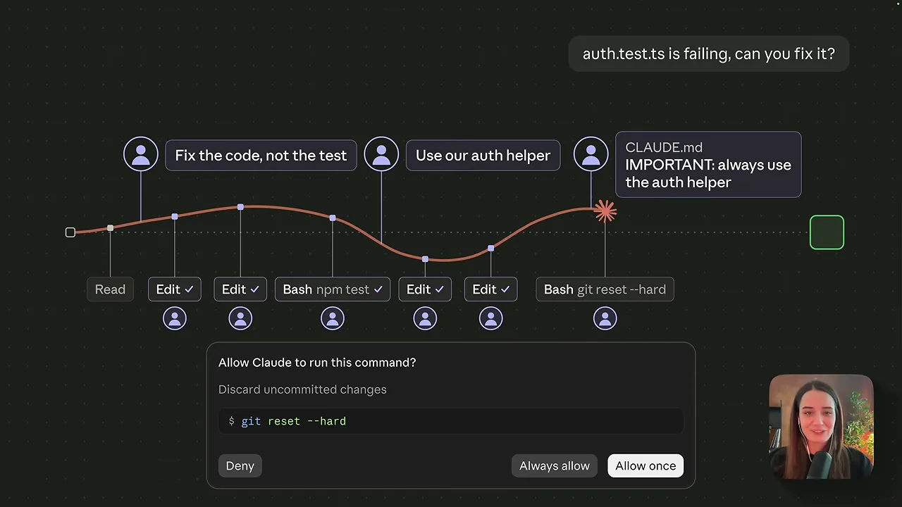
지금의 세션은 이래요
지금 Anthropic 안에서는 세션 수십 개를 동시에 몇 시간씩 돌려요. 세션이 중간중간 스스로 결과를 검증하고, 한 세션이 다른 세션들을 지휘하기도 해요. 아래 화면에서 왼쪽 acme-web 세션이 '이번 주 할 일'을 받아 작업마다 세션을 하나씩 시작하고, 오른쪽에 flaky auth test, dependencies, billing retry 같은 세션 여덟 개가 PR(Pull Request), 리뷰, 병합 단계로 나아가요.
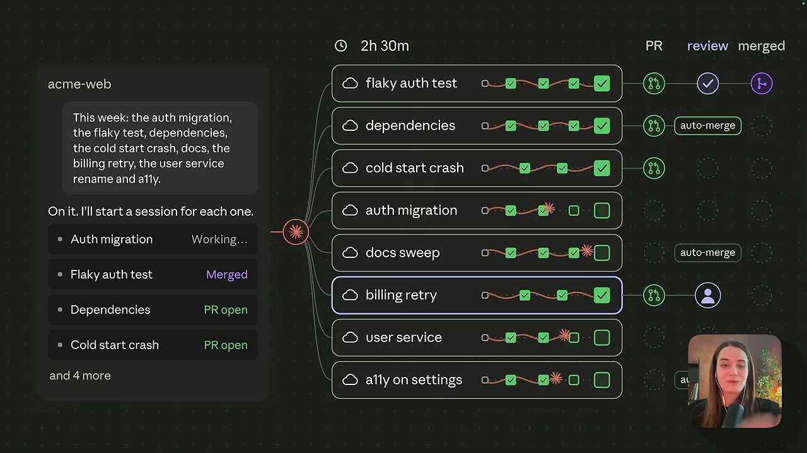
일한 양도 크게 늘었어요. 10월 Anthropic 블로그 글에 따르면 회사 모노레포에 하루 병합되는 코드 변경이 5월 2,500건에서 9월 30,000건 이상이 됐어요.
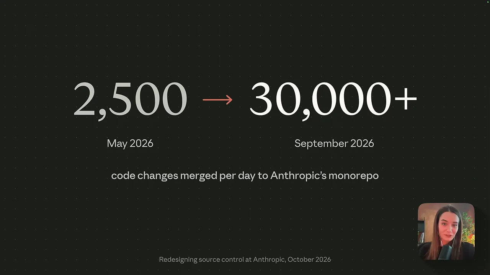
사람이 루프에서 하던 다섯 가지 일
연초의 모범 사례는 대부분 사람이 루프 안에서 하던 일에 관한 거였어요. 슬라이드는 그걸 다섯 장의 카드로 정리해요. 방향 잡기(Steering it), 승인하기(Approving it), 거절하기(Saying no), 확인하기(Checking it), 시작하기(Starting it)예요. 이 영상 전체가 이 다섯 칸을 하나씩 누구에게 넘기는지에 대한 이야기예요.
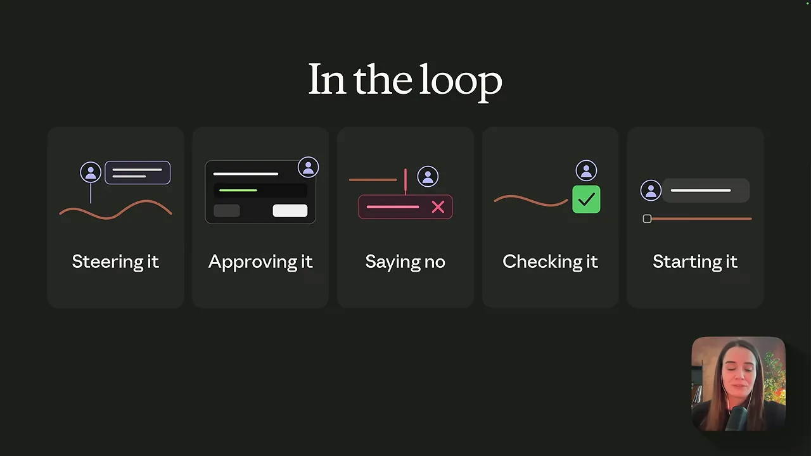
기본값만 바꿔도 대부분 빠져나와요
사람이 루프에서 빠지는 자리마다 다른 무언가가 그 일을 넘겨받아야 해요. 받는 쪽은 셋 중 하나예요. 모델, 하네스, 그리고 세션이 도는 환경이에요. 슬라이드의 다섯 카드가 흐려지고 아래에 The model, The harness, The environment 세 칸이 생기는 장면이 이 구조를 보여 줘요.
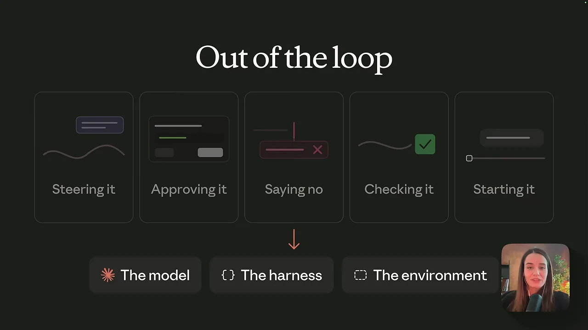
그러면 질문이 두 개 남아요. 명령을 일일이 승인하지 않고 세션을 여러 개 돌리는데 코드 품질은 괜찮을까요? 그리고 몇 시간씩 혼자 도는 세션이 안전하게 돌고 있을까요? 발표는 연초의 세션을 하나씩 고쳐 가며 이 두 질문에 답해요.
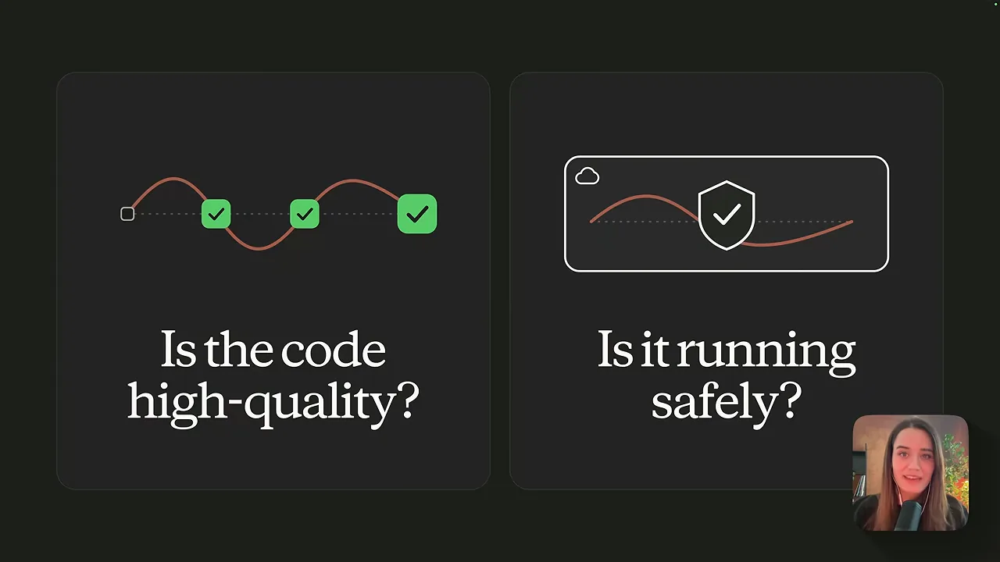
모델과 권한 모드를 지금의 기본값으로
첫 단계는 그냥 요즘 기본값을 쓰는 거예요. 모델을 Opus 4.5에서 Opus 5.5로, 권한 모드를 Manual에서 Auto로 바꿔요. Opus 5.5는 의도와 코드베이스를 훨씬 잘 이해해서 세션 중간에 방향을 덜 잡아 줘도 돼요. 오토 모드는 8월부터 기본 권한 모드라 명령을 하나하나 승인할 필요도 없어요.
CLAUDE.md는 코드에서 안 보이는 것만
모델이 의도를 잘 이해하게 되면 저장소에 넣어 둔 지시문도 다시 봐야 해요. 'IMPORTANT', 'never', 느낌표 같은 강조는 지금 모델엔 필요 없고, 오히려 모델을 엉뚱한 방향으로 보내요. 도구 호출이 늘고 결과도 나빠져요.
CLAUDE.md에는 Claude가 코드를 읽어서는 알 수 없는 것만 남겨요. 아래 화면의 다섯 줄 중 위의 네 줄('Think hard and be thorough', 'Keep going until it's done', 'IMPORTANT: always use the auth helper', 'We're on Node 18')에는 줄이 그어졌어요. 남은 건 마지막 줄, src/legacy가 아직 모바일 앱을 서비스한다는 사실뿐이에요. 코드에서 직접 참조되진 않지만 알고 있어야 하는 정보라서요. 어떤 스택을 쓰는지, 어디를 보라는 말은 이제 필요 없어요.
이 정리를 도와주는 명령이 /doctor prompt-audit예요. 지금 모델(여기선 Opus 5.5)에서 돌리면 CLAUDE.md와 스킬을 훑어 새 모델에 더 이상 필요 없는 내용을 찾아 줘요.

오토 모드는 무엇을 막나요
오토 모드는 프로젝트 안에서 파일을 읽고 고치는 것을 뺀 거의 모든 동작에 별도의 분류기를 돌리는 권한 모드예요. 아래 화면처럼 세 갈래로 나뉘어요. 프로젝트 안의 읽기·편집은 검사 없이 통과, 안전한 걸 아는 명령(npm test)은 허용, 안전한지 확신이 없는 명령(git reset --hard)은 차단이에요.
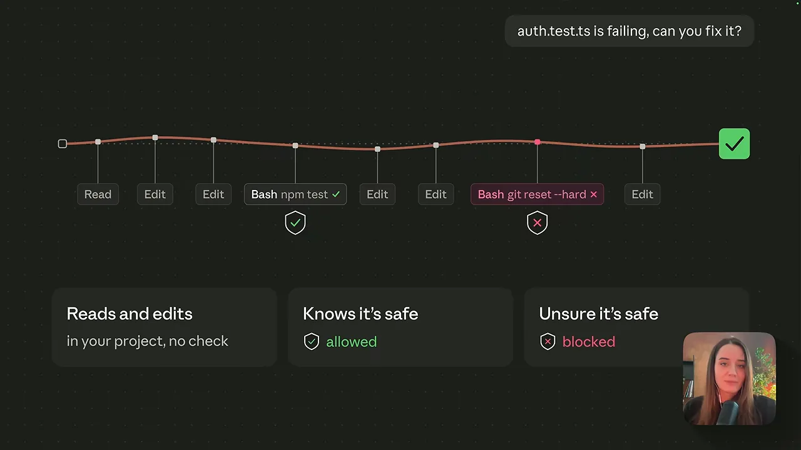
대부분은 이게 원하는 동작이에요. 그런데 '세션 수정 사항을 스테이징에 배포해 줘'라고 하면 어떨까요? 아래 화면에서 npx tsc와 npm test는 통과했지만, 배포 저장소로의 git push, S3(Amazon Simple Storage Service) 버킷 동기화, 내부 도메인 호출은 모두 막혔어요. 오토 모드가 기본으로 믿는 건 이 폴더와 이 저장소뿐이라서요. 결국 사람이 다시 루프로 불려 와요.
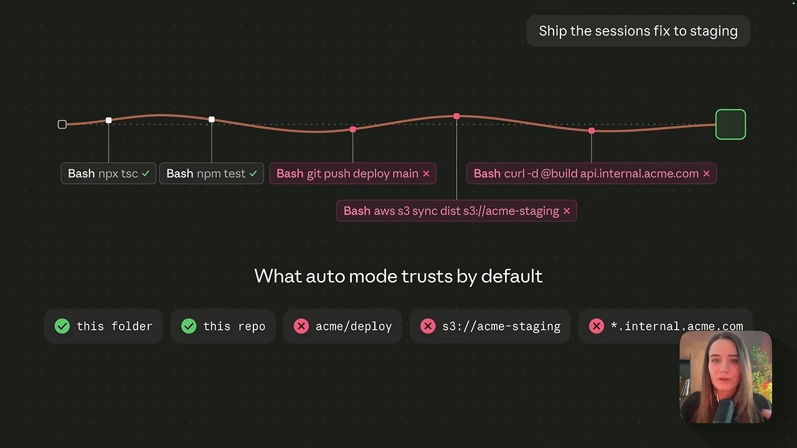
기본값으로 충분하지 않고 오토 모드에서도 승인을 자주 해야 한다면, 먼저 설정을 봐요. 오토 모드는 설정 파일에 평범한 영어 문장으로 적을 수 있고, 그 문장이 그대로 분류기에 전달돼요. 아래 settings.json의 autoMode 블록에는 믿는 소스 컨트롤(github.com/acme 아래 전부), 클라우드 버킷(s3://acme-staging), 내부 도메인(*.internal.acme.com)이 있어요. 그 아래에 '스테이징 배포는 허용', '코드를 외부 API로 보내지 말 것' 같은 규칙이 있어요.

$defaults를 두는 것도 눈여겨보세요. 영상 04:50에서 보기여기까지는 쉬웠어요. 모델이 방향 잡기를, 오토 모드가 승인하기를 가져갔으니까요. 어려운 건 그다음이에요. 사람이 더 이상 거기 없어도 괜찮다는 걸 어떻게 확신할까요? 발표는 안전과 검증 순서로 답해요.
안전 ①: 되돌릴 수 없는 일은 거부 규칙으로
지금까지 바꾼 건 모델을 올리고 오토 모드를 쓴 것뿐이에요. 둘 다 결국 모델과 일하는 방식이에요. 모델은 대부분 시킨 대로 하지만 보장은 아니에요.
근거로 든 게 8월에 Anthropic이 발표한 연구예요. 아래 화면 왼쪽은 위험한 명령을 사람이 잡아낸 비율 14%, 오른쪽은 오토 모드가 막은 비율 89%예요. 점 하나가 한 번의 시도인데, 사람 쪽은 대부분 회색이고 오토 모드 쪽은 대부분 채워져 있어요. 오토 모드가 사람보다 훨씬 낫지만, 열에 하나쯤은 여전히 통과해요.
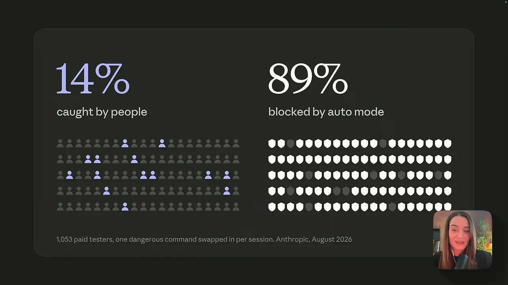
보장은 하네스에서: 거부 규칙
'절대'가 필요하면 하네스에서 강제해야 해요. 여기서 예전 모범 사례 하나가 여전히 중요해요. 권한, 그중에서도 거부(deny) 규칙이에요. 프로젝트에 특정 도구 호출을 막는 거부 규칙이 있으면 Claude Code는 오토 모드 분류기보다 먼저 그 규칙을 확인해요. 걸리면 분류기는 그 호출을 아예 보지 못해요.
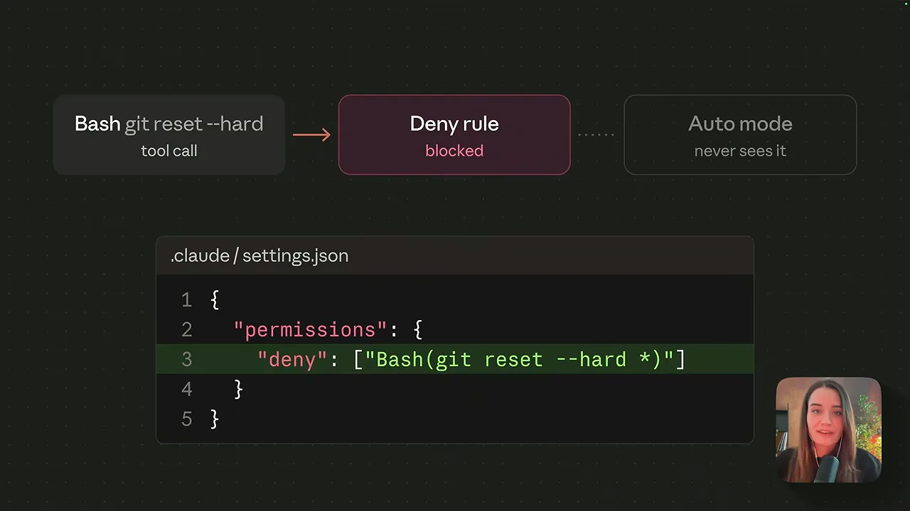
무엇을 규칙으로 만들까요
모델이 이렇게 좋아졌는데, 무엇을 규칙으로 막고 무엇을 모델 판단에 맡길까요? 발표자의 기준은 한 줄이에요. 'Claude가 이걸 한 번 틀리면 되돌릴 수 있나요?' 틀린 코드를 썼다면 되돌리면 되니 모델에 맡겨요. 커밋 안 한 변경을 날렸거나, 키를 읽어서 그게 대화 기록에 남았다면 되돌릴 수 없어요. 그런 건 규칙이어야 해요.

예를 들어 Claude가 .env 파일을 절대 읽지 않게 하고 싶다고 해 봐요. 오토 모드는 기본적으로 이걸 괜찮다고 보고 허용해요. 그러니 아래처럼 Read(./.env) 거부 규칙을 추가해요. 그러면 Read 도구뿐 아니라 cat .env 같은 명령도 이 파일을 열지 못해요. 화면 위쪽 타임라인에서 Read .env와 Bash cat .env가 둘 다 빨갛게 막혀 있어요.

안전 ②: 샌드박스와 클라우드 세션
하지만 늘 이렇게 간단하진 않아요. 어떤 명령은 부작용이 있어요. npm test는 아주 평범한 명령이라 오토 모드가 그냥 실행해요. 그런데 이 명령이 실제로 무엇을 돌리는지 보면 이야기가 달라져요.
아래 화면의 점선 상자가 npm test가 돌리는 것들이에요. package.json에 있는 스크립트 vitest run, 내가 쓴 테스트 src/auth/auth.test.ts, 그리고 빨갛게 표시된 node_modules/some-package/index.js, 곧 내가 쓰지 않은 코드예요. Claude가 뭔가 확인하려고 즉석에서 쓴 스크립트도 마찬가지예요. 이 중 하나가 오염됐다면 .env나 ~/.ssh를 읽어 collector.example 같은 처음 보는 서버로 보낼 수 있어요.
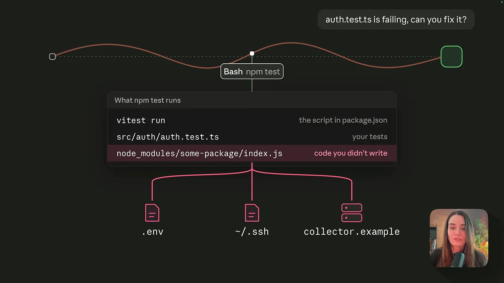
사람이 모든 걸 승인하고 있었더라도 그냥 '허용'을 눌렀을 거예요. 거절할 만한 게 보이지 않으니까요. 권한은 도구 호출을 실행할지만 정하고, 실행된 뒤 무엇에 닿는지는 제한하지 못해요. 그렇다고 npm test를 막을 수도 없어요. 테스트는 Claude가 자기 일을 확인하는 수단이니까요. 명령은 그대로 돌리되 부작용을 줄여야 하고, 그러려면 실행 환경을 좁혀야 해요.
로컬에서는 샌드박스
내 컴퓨터에서 돌린다면 이런 명령을 샌드박스 안에서 실행해요. 명령이 읽을 파일, 쓸 폴더, 접속할 호스트를 정할 수 있고, 이걸 운영체제가 강제해요. 그 명령이 띄운 자식 프로세스에도 똑같이 적용돼요.
차이는 이래요. 샌드박스가 없으면 거부 규칙은 명령 실행 전에 Claude Code가 확인하는데, 이때 보이는 건 npm test라는 글자뿐이에요. 스크립트가 나중에 어떤 파일을 열지는 몰라요. 샌드박스를 켜면 같은 규칙이 운영체제로 넘어가요. 아래 화면처럼 의존성이 .env를 열려고 해도 운영체제가 막아요. 기본적으로는 컴퓨터 대부분을 읽을 수 있으니, SSH(Secure Shell) 키가 신경 쓰이면 규칙을 하나 더 추가해요. 화면 위쪽 settings.json에 Read(./.env)와 Read(~/.ssh/**)가 함께 있어요. 허용하지 않은 호스트 collector.example에도 닿지 못해요.
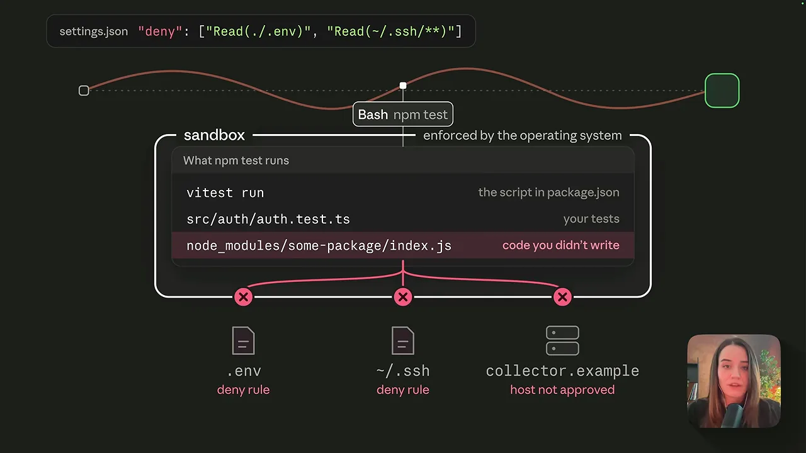
그런데 샌드박스가 덮는 건 Claude가 실행하는 셸 명령과 그 자식 프로세스뿐이에요. 아래 화면 오른쪽처럼 Claude 자신의 도구(Read, Edit, WebFetch), MCP(Model Context Protocol) 서버, 훅은 샌드박스 밖에서 돌아요. 세션의 나머지는 여전히 내 컴퓨터와 그 안의 모든 것 위에서 돌아요.
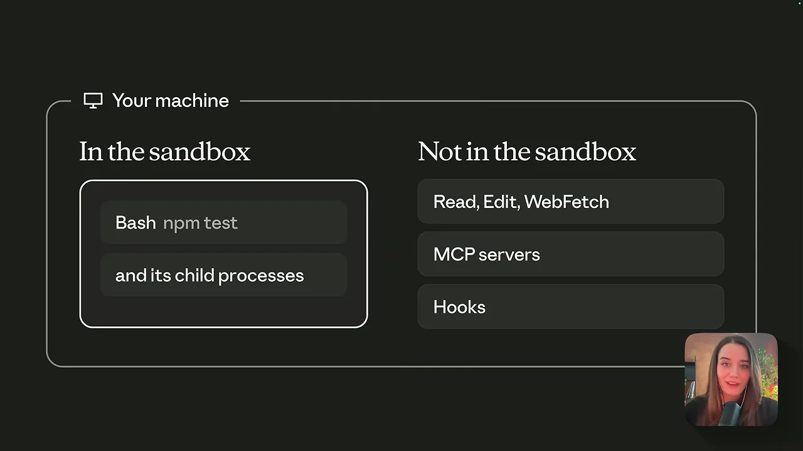
세션 전체를 클라우드로
그래서 이상적으로는 세션 전체를 그런 것들이 처음부터 없는 곳에서 돌려요. 그게 클라우드 세션이에요. 저장소를 새로 받은 자기 머신에서 돌고, 노트북을 닫아도 계속 돌아요. 몇 시간씩 도는 세션에는 꼭 필요한 성질이에요.
이러면 .env 문제가 저절로 사라져요. .env는 git에 없고, SSH 키나 GitHub 토큰도 마찬가지니까요. 세션 중간에 Claude가 'API 키가 없어요'라고 하면 네트워크 시크릿으로 추가해요. 그러면 키를 모델에 보내지 않고도 쓸 수 있어요. 아래 화면이 클라우드 환경 편집 창이에요. Network access를 Custom으로 두고 Allowed domains에 도메인을 적고, 아래 Network secrets에 'Internal billing API' 키를 api.example.com에 연결했어요. 클라우드 세션의 네트워크는 기본적으로 패키지 저장소와 GitHub 정도로 제한돼서, 다른 호스트는 이렇게 명시해야 닿아요.
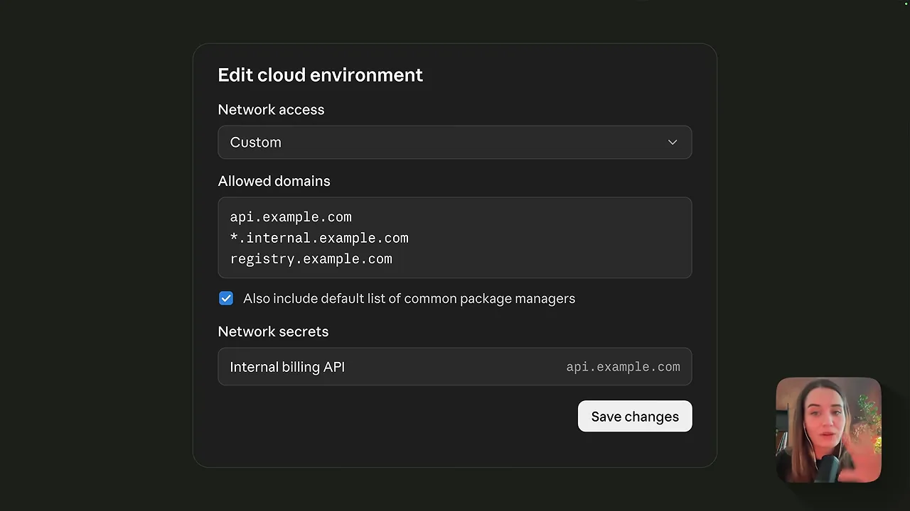
다만 기억할 게 있어요. 머신은 일회용이지만, 거기서 밖으로 나간 건 남아요. 아래 화면 왼쪽처럼 푸시한 커밋, 커넥터로 보낸 메시지는 머신이 사라져도 그대로예요. 그래서 클라우드에서도 오토 모드로 돌리고, 거부 규칙은 저장소에 커밋해서 함께 가져가요. 그러면 오른쪽처럼 강제 푸시나 비밀이 든 커밋 같은 건 여전히 막혀요.
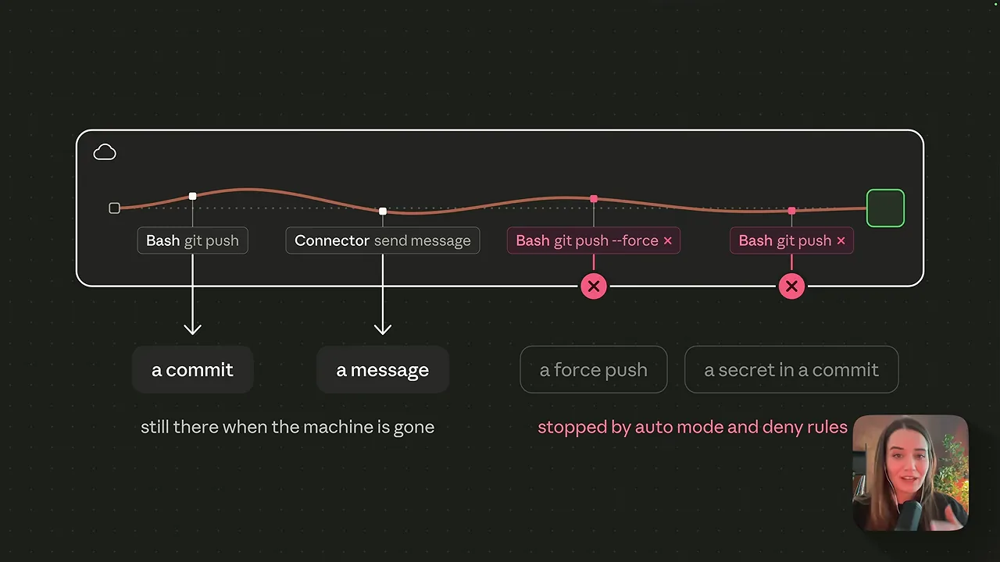
지금까지 나온 방어선을 한 그림으로 모으면 이래요. 앞의 두 칸은 실행 전에 거르고, 샌드박스는 실행 중에 막고, 클라우드 세션은 지킬 것 자체를 치워요.
검증: 통과/실패 지점을 깔아요
안전 다음은 Claude가 맞는 일을 하고 있는지 확인하는 거예요. 루프 안에 있을 땐 결과를 믿을 수 있었어요. 모든 변경을 이미 봤고, 모든 걸 승인했으니까요. 이제 Claude가 몇 시간씩 백그라운드에서 일하면 그런 감각이 없어요. 끝에 '63개 파일 변경'을 받는다고 그걸 다 읽지도 않을 거고요.
같은 프롬프트, 다른 결과
예를 들어 '인증을 새 API로 옮겨 줘'라고 시켰다고 해 봐요. Claude는 원하는 걸 잘 이해하지만, 가는 길에 작은 결정을 많이 내려야 해요. 아래 화면처럼 같은 프롬프트로도 결과가 갈려요. 옮겼지만 옛 API(Application Programming Interface)가 남아 있거나, 새 로그인에만 적용됐거나, 토큰 갱신이 빠졌거나, 모두가 로그아웃되는 식이에요. 초록색 '원했던 것'은 그중 하나뿐이에요.
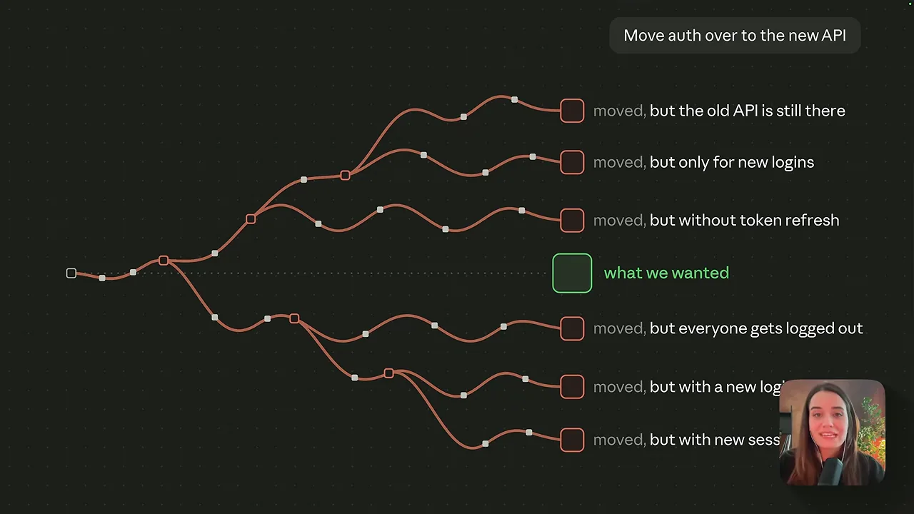
통과/실패로 끝나는 검증 지점
그래서 가는 길에 검증 지점을 깔아 둬요. Claude가 계속 자기 결과를 확인하게 하는 거예요. 통과나 실패로 돌아오는 거라면 무엇이든 돼요. 테스트, 빌드, 스크린샷처럼요. 사람은 이 검증 지점들만 검토하면 돼요. 전체 변경을 끝에 몰아서 보는 것보다 훨씬 짧아요.
아래 화면에서 검증 지점은 세 개예요. 'nobody gets logged out' 테스트, npm run build, 로그인 화면 스크린샷이에요. 모두를 로그아웃시키는 방향으로 간 실행은 첫 번째 테스트에서 빨갛게 걸려요. 그러면 다른 방법을 찾아 돌아가고, 두 번째 시도에서 테스트가 통과해요.
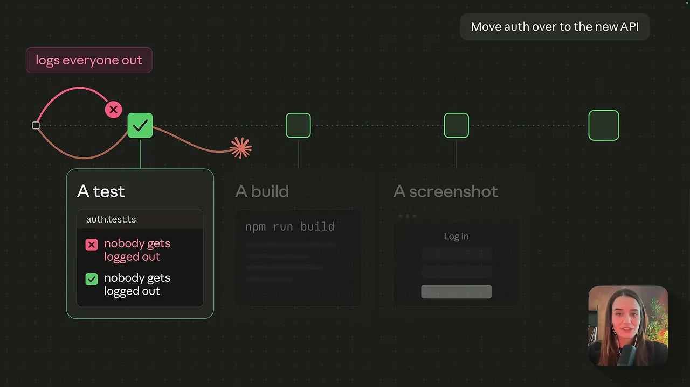
가장 쉬운 방법: 프롬프트에 적기
검증 지점을 까는 가장 쉬운 방법은 프롬프트예요. 아래 화면의 프롬프트는 세 부분이에요. 무엇이 '끝'인지('인증 테스트가 통과하고 아무도 로그아웃되지 않으면 끝'), 작업을 나눠 각자 테스트를 갖게 하라는 것, 실제 테스트 출력을 보여 달라는 거예요. 발표자는 마지막 요청을 특히 좋아해요. 사람은 그 자리에 없었으니까요.
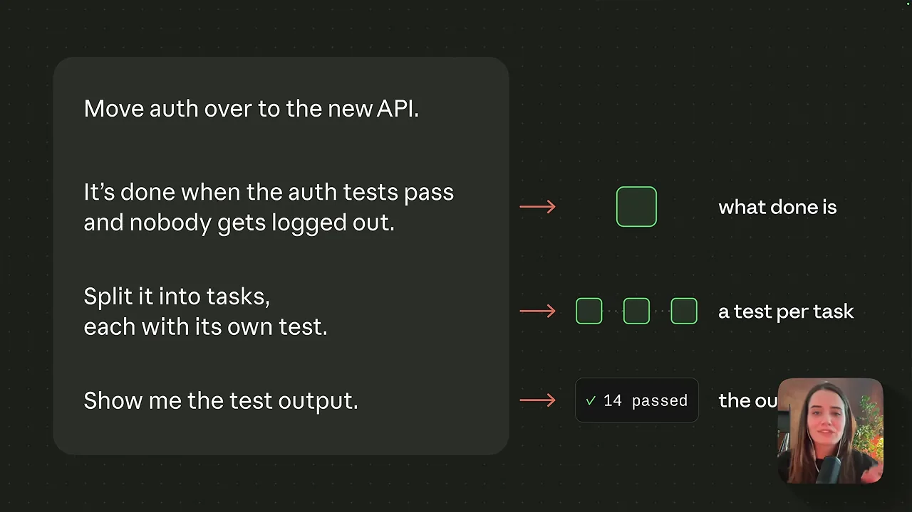
반드시 돌아야 하면 훅
그래도 프롬프트는 모델이 따른다는 보장이 없어요. 반드시 돌아야 하는 검사는 훅으로 걸어요. 훅은 Claude Code가 정해진 시점에 실행하는 스크립트예요. 언제 돌지, 무엇을 돌리고 무엇을 확인할지 내가 정해요. 아래 화면의 세 칸이 그 예예요.
| 언제 | 무엇을 | 훅 이벤트 |
|---|---|---|
| 파일을 고칠 때마다 | 린터 | PostToolUse |
| 작업을 완료로 표시할 때마다 | 바뀐 부분의 테스트 (인증 코드를 건드렸다면 인증 테스트) | TaskCompleted |
| 세션을 끝낼 때 | 전체 테스트 | Stop |
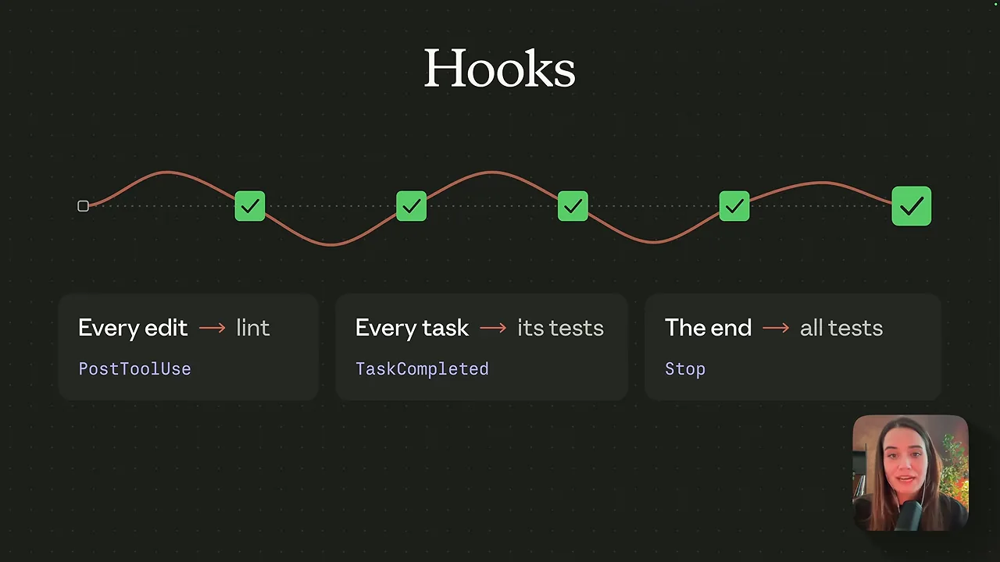
검사가 실패하면 Claude는 '아직 깨져 있네' 하고 돌아가 통과할 때까지 고쳐요. 여기서 함정이 하나 있어요. 테스트가 실패하면 대부분의 도구는 종료 코드 1로 끝나요. 그런데 종료 코드가 1이면 그 작업은 그냥 완료로 표시돼요. Claude를 돌려보내 고치게 하는 건 종료 코드 2예요. 그러니 훅 스크립트가 실패할 때 2로 끝나게 만들어야 해요. 아래 화면에서 빨간 X 지점의 왼쪽 화살표가 exit 2(돌아가서 고침), 오른쪽 화살표가 exit 1(완료로 표시)이에요.

세션을 여러 개로, CI와 리뷰
이제 혼자 둬도 마음 편한 세션이 하나 생겼어요. 그러면 몇 개 더 늘려요. 세션마다 자기 머신이 있으니 같은 폴더에서 부딪히지 않고, 워크트리를 직접 신경 쓸 일도 거의 없어요. 아래 화면처럼 세션 여덟 개가 나란히 돌고, 사람은 그중 몇 개를 열어 검토해요.
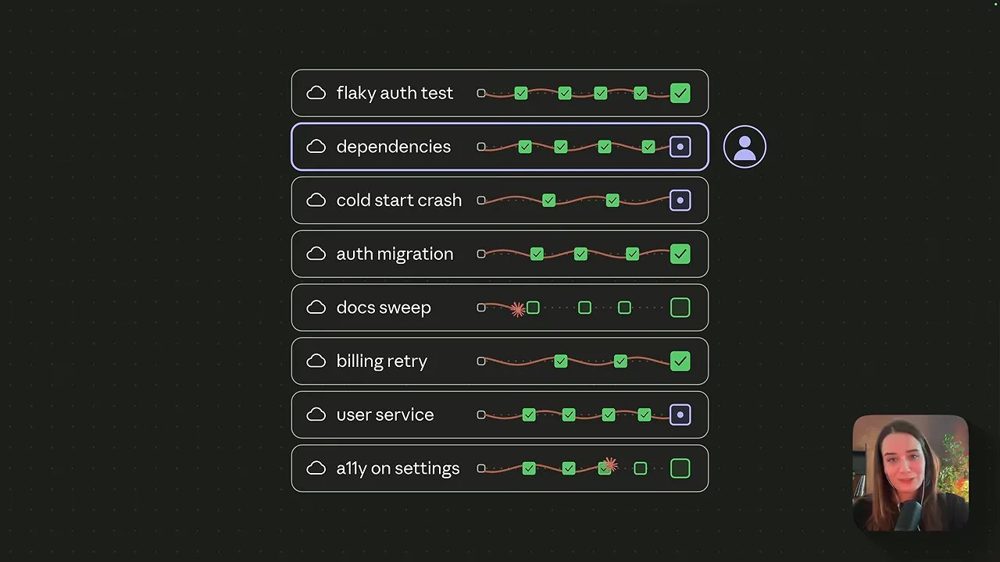
그래도 여전히 모든 세션을 직접 시작하고 하나하나 검토해요. 발표자는 이것만으로도 꽤 좋은 상태라고 해요. 무엇을 언제 시작할지, 언제 끝났다고 할지를 사람이 완전히 쥐고 있으니까요. 하지만 사람은 아직 모든 세션의 루프 안에 있어요.
가장 중요한 건 CI
여기서 가장 중요한 건 CI예요. 모든 세션은 결국 PR을 열고, CI는 세션이 어떻게 설정됐든, 가는 길에 Claude가 무엇을 결정했든 모든 PR에 같은 검사를 돌려요. CI 자동 수정을 켜면 Claude가 검사 실패를 보고 돌아가 고쳐요. 아래 화면에서 docs sweep 세션의 CI가 빨간 X로 실패했고, 화살표가 세션 쪽으로 돌아가요. 검사가 잡을 수 있었던 걸 사람이 리뷰에서 잡느라 시간을 쓰지 않아도 돼요.
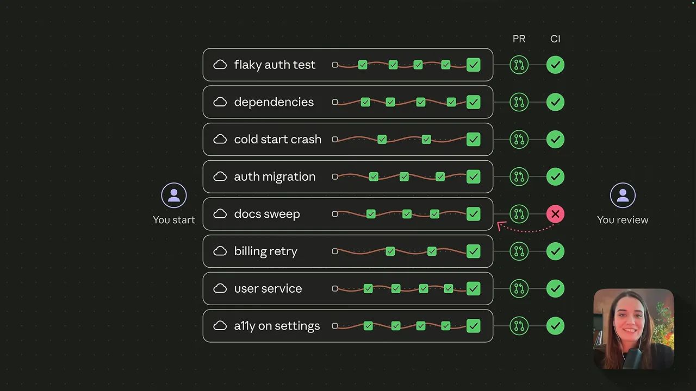
일부 PR에는 'merge when ready'를 켤 수도 있어요. 모든 검사가 통과하면 GitHub가 알아서 병합해서 사람이 리뷰하는 루프에 없어도 돼요. 아래 화면에서 dependencies와 docs sweep에만 'Merge when ready' 표시가 붙고, 나머지는 사람 리뷰 아이콘이 붙어 있어요. 다만 이건 기본값이 아니고 변경이 얼마나 위험한지에 달렸어요.
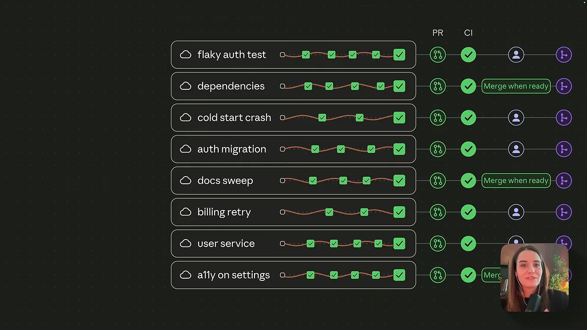
리뷰는 Claude가 먼저, 사람은 위험만큼
발표자 팀에서는 모든 PR을 Claude가 먼저 리뷰해요. 코드를 쓴 세션이 아니라 새 컨텍스트에서요. 아래 화면처럼 에이전트들이 버그를 찾고, 다른 에이전트 묶음이 찾은 버그를 하나씩 다시 확인해요. 진짜인 것만 PR에 올라가요. 'login retry never stops'는 확인 단계에서 걸러져 dropped가 됐고, 나머지 셋은 Important, Nit, Pre-existing으로 등급이 붙어 올라갔어요.
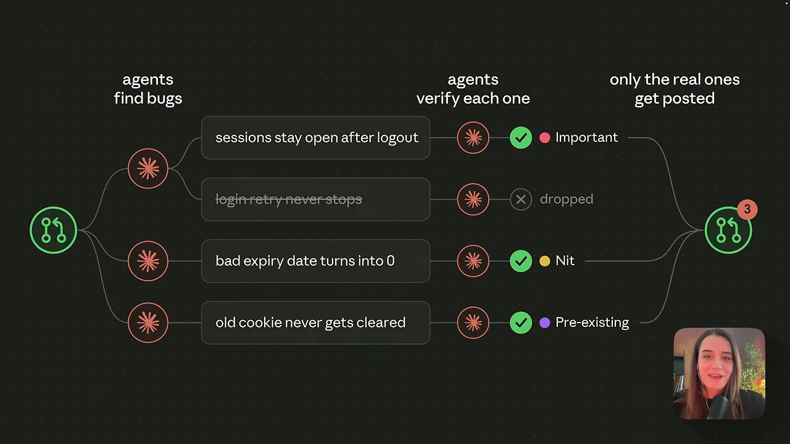
그다음 사람이 얼마나 볼지는 위험도로 정해요.
| 변경 | 예 | 사람 리뷰 |
|---|---|---|
| 작은 변경 | 문서, 문구, 오타, 린트 수정 | 자동 검사가 초록이면 없이 진행 |
| 대부분의 변경 | 평범한 제품 변경 | 한 사람 |
| 가장 위험한 변경 | — | 두 사람 이상 |
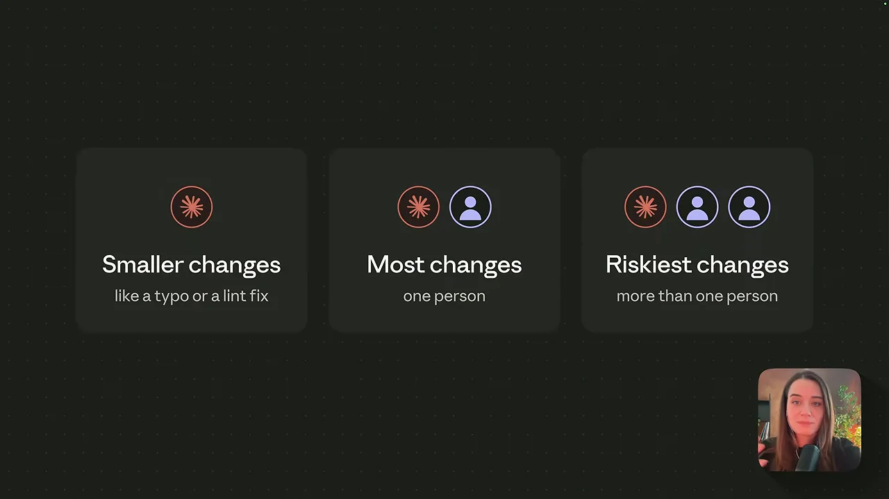
오케스트레이터 세션, 그리고 정리
Anthropic이 이미 많이 하고 있고, 앞으로 갈 방향이라고 보는 건 세션을 사람이 일일이 시작하지도 않는 거예요. 발표자는 문맥 전환에 약해서 여러 세션을 동시에 관리하는 게 늘 잘 되진 않는다고 해요. 그래서 메인 세션 하나를 오케스트레이터로 둬요.
아직 베타인 Claude Code projects가 그런 방식이에요. 할 일을 말하면 오케스트레이터가 일을 나누고, 작업마다 다른 세션을 시작하고, 돌아오는 결과를 추적해요. 이 하위 세션을 스레드라고 불러요. 스레드를 시작하고 검증하는 것까지 자동이라, 여덟 세션과 따로 대화하는 대신 하나하고만 대화하면 돼요.
판단하는 모델과 일하는 모델을 나눠요
메인 세션은 코드를 직접 쓰지 않아요. 그래서 무엇을 할지 정하고 돌아온 결과를 판단하는 데 강한 모델, Fable을 써요. 다 안 된 결과가 돌아오면 정말 끝나고 모든 검사를 통과할 때까지 다시 돌려보내요. 스레드에는 실제 작업을 잘하는 모델, Opus 5.5를 써요. 두 모델은 따로 정할 수 있어요.
아래 화면 왼쪽 위에 'Fable decides and judges', 오른쪽 위에 'Opus 5.5 does the work'라고 적혀 있어요. 왼쪽 acme-web 대화가 이번 주 할 일 여덟 개를 받아 'On it. I'll start a session for each one.'이라고 답했고, 목록의 작업들이 Done으로 바뀌었어요. 오른쪽의 여덟 스레드는 모두 마지막 칸까지 초록 체크예요.
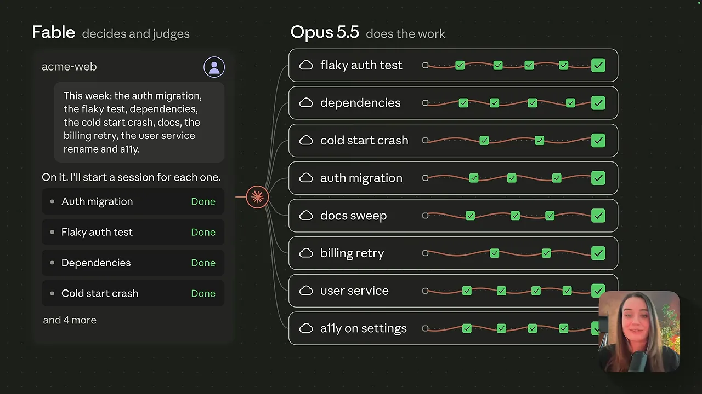
이 구성의 또 다른 장점은 컨텍스트를 관리하지 않아도 된다는 거예요. Claude Code projects에서는 컨텍스트가 자동으로 관리돼서 언제 compact하고 언제 clear할지 고민할 필요가 없어요.
모범 사례는 자리만 옮겼어요
처음의 다섯 칸으로 돌아가 보면 옛 모범 사례는 하나도 사라지지 않았어요. 맡는 쪽만 바뀌었어요. 아래 슬라이드가 그 정리예요.
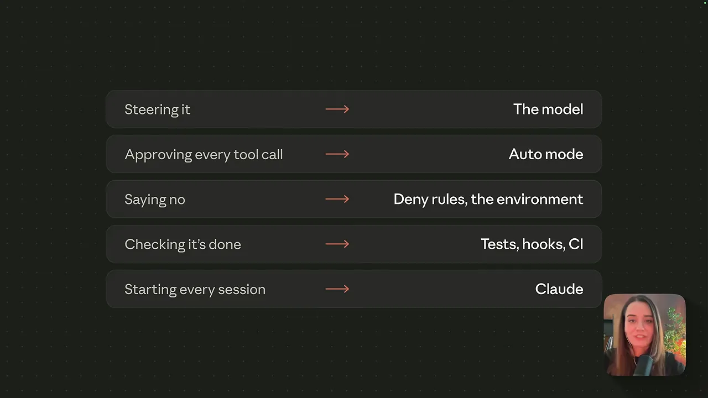
직접 해 보려면
발표자의 마지막 제안은 네 단계예요.
- 평소 Claude에 주던 것보다 훨씬 큰 일을 하나 골라요.
- CI가 정말 신경 쓰는 걸 잡는지 확인해요.
- 환경을 잠깐 다듬어요 — 네트워크 접근, 시크릿, 설정 스크립트.
- 클라우드에서 시작해 어디서 막히는지 봐요. 세션이 멈추는 곳, 아직 사람이 루프에 있는 곳이 다음에 Claude에 넘길 부분이에요.
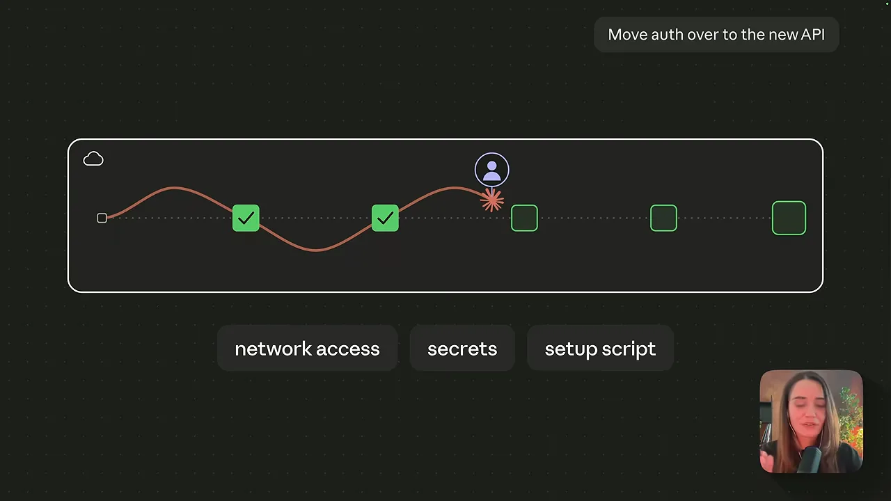
마지막 화면에는 공식 문서의 모범 사례 페이지 주소(code.claude.com/docs/en/best-practices)가 나와요. 발표자는 이 문서도 꼭 읽어 보라고 권해요.